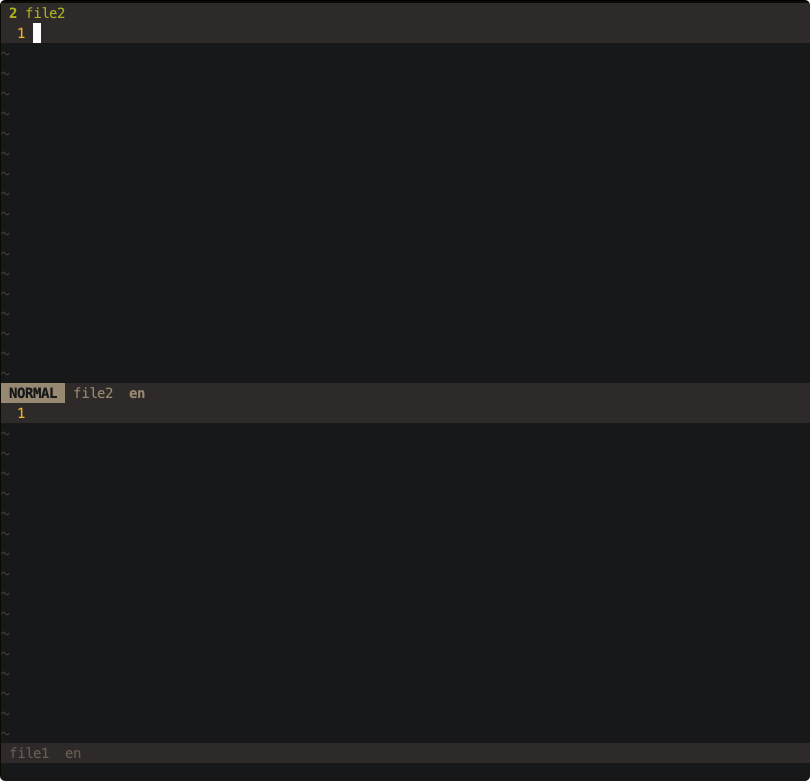

Most editors, like VSCode, use tabs and windows system. A tab usually means an opened file, and when we close it, the file goes away.
Vim use buffers, windows and tabs, and they are different from most editors.
Buffer
First, let’s look at buffers in vim.
A buffer is the in-memory text of a file.
When we open a file in vim, it creates a buffer in memory. And what in this buffer is the file’s content. When we edit the file, we edit the buffer.
Let’s try to edit a file named file1:
vim file1
Vim creates a new buffer for file1 in memory. When we type :q to quit vim, the buffer will be cleared and there will be no file file1 stored on disk because we didn’t write anything to the buffer.
vim file1 file2
This will make vim to create two buffers for these files. By default, vim shows file1 on the window. We can see all the buffers by typing :ls, :buffers, or :files.
To switch between buffers, there are several commands:
:bnextswitch to next buffer (:bprevfor previous buffer):buffer <filename>you can type the file name (can autocomplete with<Tab>) to switch to that buffer.:bufferNwhere N is buffer number,:buffer2for example, will switch to buffer #2- switch between your last position with
<Ctrl-o>,<Ctrl-O>, or<Ctrl=i>. This is not buffer specific - toggle between previous file with
<Ctrl-^>
This key mapping is helpful. It lists all the buffers and waits for you to type a buffer name or buffer number to switch.
:nnoremap <Leader>b :buffers<CR>:buffer<Space>
You can type :bdelete to close a buffer, but I never used this command.
Window
A window is a viewport for a buffer.
When we open file1 with vim file1, there are one window and one buffer. When we type vim file1 file2, there are one window and two buffers.
Window can be split by :split and :vsplit. Both create a new window. For example, we open file1 with vim, and then type :split file2 to split the window horizontally by two. The top one is the window for the buffer on file2, and the bottom for the buffer on file1.

Different windows can display the same buffer. On the top window, we type :buffer file1 to display the same buffer as the bottom window. So these two windows are the same viewport for buffer file1. When we edit in the top window and type some text, both content shown in these two windows will change, because the buffer they displayed are the same one.
You can use <Ctrl-w> c to close current window, or use command :q.
There are some useful shortcuts for window:
<Ctrl-w> vopen a new vertical split<Ctrl-w> sopen a new horizontal split<Ctrl-w> cclose current window<Ctrl-w> omake current window the only one on the screen and close other windows<Ctrl-w> h/j/k/lmove cursor to left/bottom/top/right
And some Ex commands:
:vsplit <filename>split window vertically:split <filename>split window horizontally:new [filename]create a new window
Tab
A tab is a collection of windows. Unlike most editors, a tab in vim can contain one or more windows, and when a tab is closed, the buffers displayed in the tab will not be closed.
To switch between tabs, there are several commands:
:tabnew <filename>open file in a new tab:tabcloseclose current tab:tabnextswitch to next tab:tabprevswitch to previous tab:tablastswitch to the last tab:tabfirstswitch to the first tab
To start vim with multiple tabs:
vim -p file1 file2 file3
set hidden
When we swith from one buffer with unsaved changes to another, there will be an error:
E37: No write since last change (add ! to override!)
We can use set hidden command. With this option the changes will persist in the buffer but won’t be saved on disk.